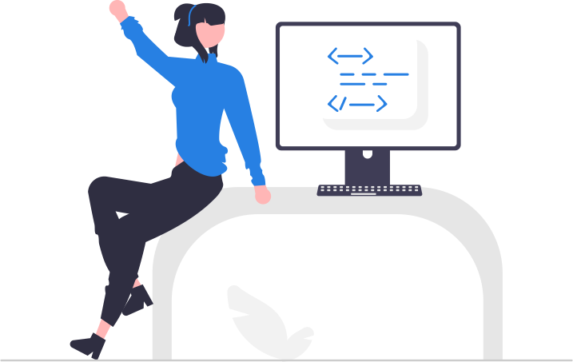

# Addition
10+3
10 + 3 # spaces are optional but recommended
# Subtraction
10 - 3
# Multiplication
10 * 3 # correct
10 x 3 # error
# Division
10 / 3 # correct
10 \ 3 # error
# Exponentiation
10 ^ 2
# Order of Operations
10 + 3 * 2
(10 + 3) * 2
# Negative Numbers
10 + -30
# Decimals and Fractions
1.234
(1 / 3)
# Leading and Trailing Zeros
09.870
# Large Numbers
9876543 # correct
9,876,543 # error
9 876 543 # errorIntroduction to R
for Social Scientists
Workshop Day 1A | 2023-06-01
Jeffrey M. Girard | Pitt Methods

Overview
Instructor

Jeffrey Girard, PhD
affcom.ku.edu/girard
jmgirard@ku.edu
Background
- Assistant Professor, University of Kansas
- Research Postdoc, Carnegie Mellon University
- PhD Student, University of Pittsburgh
Research Areas
- Psychological Assessment
- Affective/Interpersonal Communication
- Applied Statistics and Machine Learning
- Data Science and Software Engineering
R Rationale
- Think of your computer as the engine of a car
- It provides raw power for computation
- The R language is like the controls for the car
- It lets you apply and direct that power
- RStudio is like a fancy dashboard for the car
- It adds extra information and convenience
- An R package is like an add-on for the car
- It adds new features and capabilities
Workshop Goals
- This is a beginner-friendly workshop aimed at social scientists with little to no experience in R
- My goal this week is to “teach you how to drive”
- Through lectures and live coding, you will learn the fundamentals of programming, data wrangling, visualization, and modeling in R
- Through hands-on exercises, you will gain confidence in your skills and ability to learn
- I will help you get your “driver’s license” but you will need to practice to become a pro
Workshop Roadmap
| DAY 1A | DAY 2A |
|---|---|
| Intro/Overview | Factors/NAs |
| R Console/RStudio | Data Exploration |
| Objects/Functions | Correlations/Groups |
| DAY 1B | DAY 2B |
| Vectors/Strings | Linear Modeling I |
| Packages/Tibbles | Linear Modeling II |
| Import/Export | Linear Modeling III |
Workshop Etiquette
Things to Do
- Behave respectfully and with patience
- Ask for help in chat or “raise hand”
- Turn your camera on or off as desired
- Come and go from workshop as needed
Things Not to Do
- Don’t disparage yourself or others
- Don’t stay confused for too long
- Don’t unmute yourself when not talking
- Don’t re-sell the workshop materials
R and RStudio
Programming is a Superpower
Programming is how we talk to and control our amazing computers
It gives us power and flexibility
Everything we do in this course will be accomplished via programming
Programming will leave a record of what we did (i.e., code), so we can later reuse, adapt, and share it
Common Data Science Languages
General Purpose
- R (interactive, welcoming)
- Strengths: statistics, data wrangling, data visualization
- Weaknesses: relatively slow, not security-focused
- Python (popular, versatile)
- Strengths: automation, machine learning, data wrangling
- Weaknesses: relatively slow
- Java / C++ / Scala / Julia (faster but older and harder or newer and smaller)
Special Purpose
- JavaScript (web), SQL (databases), Swift (mobile), MATLAB (neuroscience), etc.
The R Ecosystem
- Think of your computer as the engine of a car
- It provides raw power for computation
- The R language is like the controls for the car
- It lets you apply and direct that power
- RStudio is like a fancy dashboard for the car
- It adds extra information and convenience
- An R package is like an add-on for the car
- It adds new features and capabilities
Installing R
Windows
- Open a web browser
- Visit cloud.r-project.org
- Click “Download R for Windows”
- Click the “base” subdirectory link
- Click “Download R-4.X.X” (e.g., 4.3.0)
- Run the downloaded .exe file
- Select all the default options
- Complete the installation wizard
Mac OS
- Open a web browser
- Visit cloud.r-project.org
- Click “Download R for macOS”
- Click “R-4.X.X.pkg” (e.g., 4.2.2)
- Run the downloaded .pkg file
- Select all the default options
- Complete the installation wizard
Installing RStudio
Windows
- Open a web browser
- Visit rstudio.com/download
- Scroll down until you find the table under the “All Installers” section
- Find the row for “Windows 10/11”
- Click “RStudio-2022.XX.X-XXX.exe”
- Run the downloaded .exe file
- Select all the default options
- Complete the installation wizard
Mac OS
- Open a web browser
- Visit rstudio.com/download
- Scroll down until you find the table under the “All Installers” section
- Find the row for “macOS 10.15+”
- Click “RStudio-2022.XX.X-XXX.dmg”
- Run the downloaded .dmg file
- Drag the RStudio icon to your Applications folder (if you want)
RStudio Window

Console and Math
R will Grant your Wishes
R is like a well-meaning but overly literal genie
- It has the power to grant almost any wish
- But we must phrase our wishes carefully!
- We will always get what we ask for…
- …but not always what we wanted.
Mastering the R language means learning…
- How to properly phrase commands
- How to decipher error messages
- How to view code from R’s perspective
- How to detect and correct small mistakes
Communicating with R
- The Console is like a chat window with R
- You send a command to R and get a response
- Neither side of the conversation is saved
- An R Script is like an email thread with R
- You send many commands to R all at once
- Only your side of the conversation is saved
- A Quarto Document is like a scrapbook with R
- You can combine code and formatted text
- Both sides of the conversation are saved
Console Live Coding
Scripts Live Coding
# Creating a new script
## Option 1: File > New File > R Script
## Option 2: Top bar: white square with green plus icon
## Option 3: Ctrl+Shift+N (Win) Cmd+Shift+N (Mac)
## A new pane will be added to the RStudio window called the Source Editor
# Entering commands into script
## In the Source Editor, we can add many lines of code to a script
## This allows for longer and more complex operations
## Think of it like drafting an email with many instructions
(1.4 + 2.8 + 9.3) / 3
30.1 - 24.7
# Running one line of code
## Hitting Enter (Win) or Return (Mac) does not run the code
## We can run one line of code at a time to see its results in console
## Option 1: With cursor on a line, click the Run button (top-right)
## Option 2: With cursor on a line, Ctrl+Enter (Win) or Cmd+Return (Mac)
# Running many lines of code
## We can run multiple lines of code at once to see results in console
## Option 1: Highlight lines with mouse, click the Run button (top-right)
## Option 2: Highlight lines with mouse, Ctrl+Enter (Win) or Cmd+Return (Mac)
## We can even run all lines of code in a script at once
## Option 1: Click the Source button (top-right)
## Option 2: Ctrl+Shift+Enter (Win) or Cmd+Shift+Return (Mac)
# Adding comments to scripts
## To help communicate the purpose of our code, we can add comments
## Comments will be ignored by R and are only there for human readers
## We always start a comment in an R script with a hash symbol: #
## I have been using comments in this very section you are reading!
# Calculate the average score on the quiz
(1.4 + 2.8 + 9.3) / 3
# Calculate the difference between exam 1 and exam 2
30.1 - 24.7
100 / 9 # we can even have comments at the end of line (start will still run)
# Saving the script file
## Option 1: File > Save
## Option 2: Source bar: blue and white disk icon
## Option 3: Ctrl+S (Win) Cmd+S (Mac)
## For now, save it wherever; we'll learn about Projects in [02b]
## You will now have a .R file that you can keep and/or transfer
## Only the code/input is saved in the script, not the results/outputAssignment
Assignment
- It is often useful to store data in named objects
- This makes the data easier to use and re-use
- This makes the code easier to write and read
- Which command is easier to follow?
- Dial 7 8 5 8 6 4 0 8 4 1
- Call Office Phone
- Named objects are created using assignment
- Give a name then an arrow then the data
office <- 7858640841
Assignment Live Coding
# LESSON: Assigning and printing
x <- 2
x
# ==============================================================================
# USECASE: Using an object in math (a la algebra)
x * 4
2 * 4
# ==============================================================================
# LESSON: You must use assignment to update an object
x
x + 1
x # still 2
x <- x + 1
x # updated to 3
# ==============================================================================
# USECASE: We can use the same object multiple times in a line
(10 + x - 1) / x
# ==============================================================================
# USECASE: We can also use an object to create another object
y <- 10 + x
y
# ==============================================================================
# USECASE: We can also use multiple objects in a line
y / xNaming
Naming
- Object names can only include:
- Letters:
a-Z - Numbers:
0-9 - Underscores:
_ - Periods:
.
- Letters:
- Additional Rules:
- Must start with a letter or period
- Cannot contain spaces or dashes
- Cannot contain other symbols
- Names are case-sensitive (
age≠Age)
Naming Live Coding
# LESSON: Good names are a balancing act
x <- 93 # what is it?
rate <- 93 # too short
heart_rate_in_beats_per_minute <- 93 # too long
heart_rate_bpm <- 93 # just right
# ==============================================================================
# PITFALL: Don't try to include spaces or dashes in names
heart rate <- 93 # error
heart-rate <- 93 # error
# ==============================================================================
# PITFALL: Don't try to include special symbols
age@time2 <- 12 # error
age_time2 <- 12 # correct
# ==============================================================================
# PITFALL: Don't try to put a number or underscore first
heart_rate_1 <- 93 # correct
1_heart_rate <- 93 # error
_heart_rate <- 93 # error
# ==============================================================================
# LESSON: Object names are case-sensitive
heart_rate <- 93
Heart_rate <- 88
heart_rate # still 93
Heart_rate # a new objectFunctions
Functions
- Recipes allow chefs to cook up tasty treats
- Recipes call for ingredients
- Recipes involve one or more steps
- Steps transform ingredients into treats
- Functions are like customizable recipes
- Functions call for inputs (“arguments”)
- Functions involve one or more lines of code
- Code transforms inputs into outputs
- Using functions requires parentheses (usually)
out <- f(in1, in2)
Functions Live Coding
# USECASE: Function can perform a task more easily and readably
# TEMPLATE: output <- function_name(input)
9 ^ (1 / 2)
x <- sqrt(9)
x
# ==============================================================================
# LESSON: We can also use functions to transform objects
y <- 9
sqrt(y)
# ==============================================================================
# LESSON: We can even use functions to transform the result of calculations
2 / 3
round(2 / 3)
# ==============================================================================
# LESSON: We can customize what a function does using arguments
# TEMPLATE: output <- function_name(argument, argument_name = argument_value)
round(2 / 3, digits = 2)
round(2 / 3, digits = 3)
# ==============================================================================
# LESSON: Some arguments are optional because they have default values
round(2 / 3) # the default value for digits is 0
round(2 / 3, digits = 0)
# ==============================================================================
# LESSON: Functions can be "nested" and are evaluated inside-out
sqrt(5)
round(sqrt(5)) # Square root 5 then round the result
sqrt(round(5)) # Round 5 then square root the result